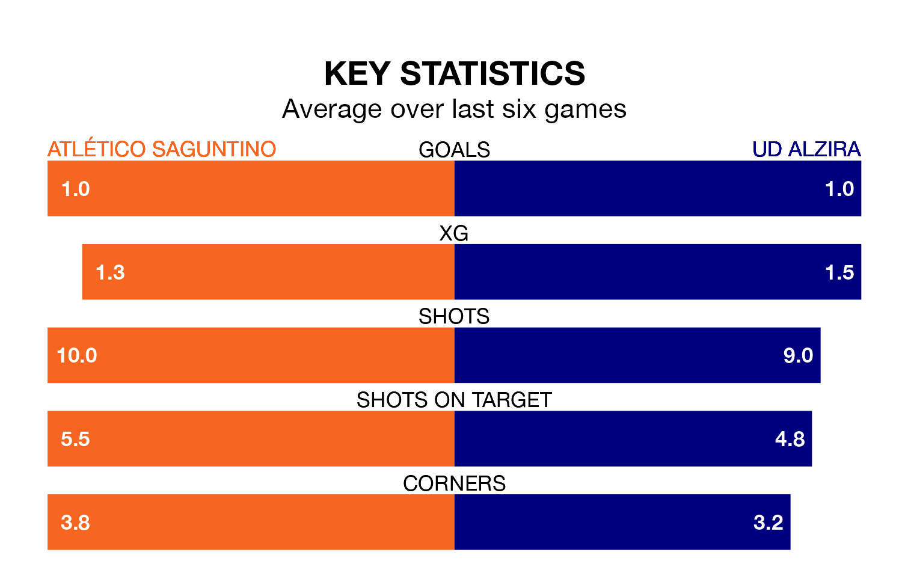

Atlético Saguntino host UD Alzira on Sunday at the Estadio Nou Camp de Morvedre in the Segunda División RFEF Group 3.
In their last league match, on April 21, Atlético Saguntino beat Terrassa 2-1 away, with goals from José Álvarez Martí and Néstor Querol Mateu.
Alzira also won, 2-1 at home against Valencia B on April 20, with Pablo Palacín Serra scoring their goals.
In the last 10 years, Atlético Saguntino and Alzira have played each other on eight occasions. Atlético Saguntino won two of them, Alzira three, and they drew three times.
On average, Atlético Saguntino scored 0.9 goals and Alzira 1.2 in those matches.
Their last meeting was on December 16, when Alzira won 2-1 at home.
With 31 goals in 31 games so far this season, Atlético Saguntino are scoring at below the league average rate with 1.0 goals per game. And they are conceding more than average, letting in 39 goals at a rate of 1.3 per game.
Alzira, meanwhile, are average scorers, with 1.2 goals per game. They have conceded 1.3 goals per game.
The home team are 13th in the table after 31 games, of which they have won 11 and drawn seven, earning 40 points.
The visitors are three places ahead of Atlético Saguntino in 10th, with 10 wins and 12 draws putting them on 42 points.
Atlético Saguntino are in mixed form in the Segunda División RFEF Group 3, with three wins and a draw from their last six games.
And also with three wins and a draw over that period, Alzira's form is identical – they have both taken 10 points from 18.
Updated: 07:59 (UTC), 26/04/24